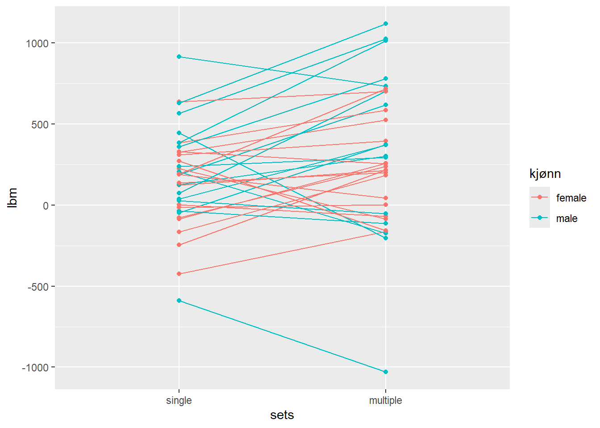
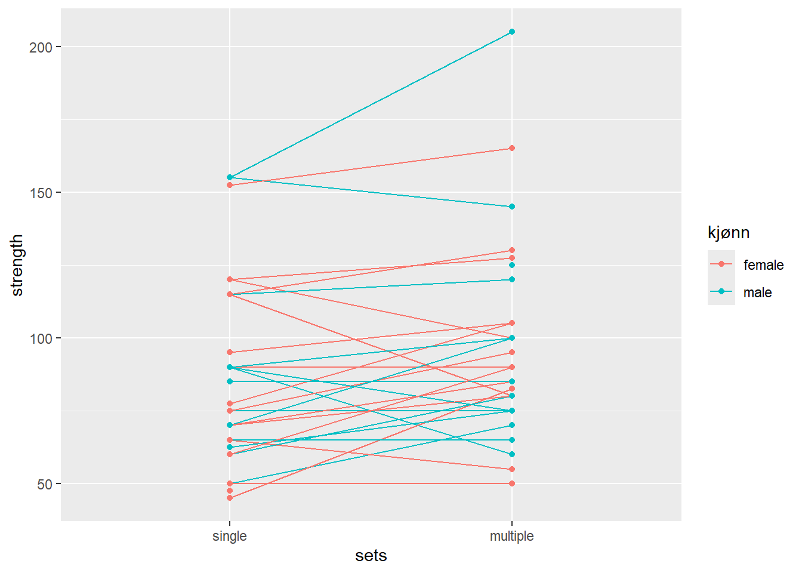

| Age (years) | Stature (cm) | Body mass (kg) | |
|---|---|---|---|
| Female n = 18 | 22 (1.3) | 167.7 (6.9) | 64.4 (10.4) |
| Male n = 16 | 23.6 (4.1) | 182.9 (5.9) | 75.8 (10.7) |
Assignment 5: Analyzing repeated measures experiments
Effekten av treningsvolum på hypertrofi og styrke
Introduksjon
Metode
Etisk godkjenning
Alle deltakerne ble informert om potensiell risiko og ubehag studien kunne medføre og gav informert bekreftelse og godkjenning av dette i forkant av studieopptaket. Studiedesign var forhåndsregistrert (ClinicalTrials.gov Identifier: NCT02179307), og godkjent av den lokale etikk-komiteen ved Høgskolen i innlandet Lillehammer, avdeling for idrettsvitenskap (no. 2013-11-22:2) og alle prosedyrende ble gjennomført i henhold til Helsinki-erklæringen
Deltakere
41 menn og kvinner var med i denne studien. Alle deltakerne måtte være ikke-røykere mellom 18 og 40 år. For å kunne observere effekten av treningsintervensjonen best mulig kunne ikke deltakerne ha en treningshistorie med mer enn én økt med styrketrening per uke de siste 12 månedene opp til intervensjonen. Deltakerne kunne ikke ha redusert muskelstyrke som følge av tidligere eller nåværende skade av samme årsak, og de kunne ikke gå på faste medisiner da også disse kunne påvirke trenignseffekten.
7 av deltakerne ble ekskludert fra data-analysen på grunn av at de ikke gjennomførte 85 % eller mer av de planlagte treningsøktene under intervensjonen. Årsakene var; ubehag eller smerte i underekstremitetene under trening (n = 5), skade urelatert til studiet (n = 1) og mislyktes i å følge protokollen (n = 1).
Alle deltakerne meddelte tidligere erfaring med idrettsaktivitet (f.eks. lagsport, langrenn og turn). 20 av deltakerne meddelte at de jevnlig drev med fysisk aktivitet eller trening når de ble med i studien (ca. to ganger i uken), og 10 av disse utførte sporadiske styrketreningsøkter, men ikke mer enn en økt per uke.
Deltakerne er beskrevet i Table 1
Studie design
Mål av muskelmasse (mål av regional lean mass)
Muskeltverrsnitt av knestrekkerne (MTK; vastus lateralis, medialis, intermedius og rectus femoris) ble målt før og etter treningsintervensjonen ved hjelp av “magnetic resonance imaging” (MRI) i samsvar med produsentens protocol (S-Scan, Esaote Europe B.V., Maastricht, the Netherlands). Bildene ble analysert blindt av den samme teknikkeren ved hjelp av OsiriX (v.5.6, Pixmeo Sarl, Bernex, Switzerland). Tverrsnittet ble tatt med samme avstand til kneleddet og ved bruk av minst fire sammenhengende bilder (5 mm tykkelse, 10 mm atskillelse) hos alle deltakerne. Kroppssammensetnging hos deltakerne ble målt før og etter intervensjonen ved hjelp av “Dual-energy x-ray absorptiometry” (DXA) (Lunar Prodigy, GE Healthcare, Oslo, Norway), også dette i henhold til protokoll. I forkant av MRI- og DXA-målingen ble deltakerne bedt om å faste i minimum to timer før testing, og unngå hard fysisk aktivitet 48 timer føt testing. Etter siste treningsøkt under intervensjonen var det to dager til post-målingene med MRI og DXA.
Mål av maksomal styrke
Testing av maksimal styrke i knestrekkerne ble gjort med en repetisjon maks (1RM) med etbeins beinpress. Test-økta ble standardisert for alle deltakerne med et spesifikt oppvarmingsprogram bestående av 10, 6 og 3 repetisjoner med belastning på 50, 75 og 85 % av forventet maksimal styrke. Etter dette ble 1RM funnet ved å gradvis øke motstanden i beinpress til deltakeren ikke klarte å fullføre bevegelsen i øvelsen på grunn av for høy vekt. Den høyeste vekten registrert med fullført bevegelse ble registrert som 1RM. Alle deltakerne fikk seks forsøk.
Treningsprotokoll
Intervensjonen bestod av 12 ukers standradisert styrketrening for hele kroppen. Alle øvelsene for bein ble utført med et bein om gangen for å få best tilpasset treningsvolum. Alle deltakerne utførte styrketrening som bestod av et enkelt sett (single set protokoll) og tre sett (multiple set protokoll). Hvilket av beina til deltakerne som skule brukes til hvilken protokoll ble tilfeldig trukket på forhånd.
Oppvarmingen før alle treningsøktene bestod av følgende; 5 min sykling på ergometersykkel, etterfulgt av 10 repetisjoner av hver av kroppsvektøvelser (push-ups med tilpasset motstand for deltakernes nivå, sit-ups, rygg-hev og knebøy), og til slutt et sett med 10 repetsijoner av hver øvelse i økta med 50 % av 1RM.
Styrkeøvelsene for bein ble utført i følgende rekkefølge; etbeins beinpress, beincurl og knestrekk. Øvelsene ble utført med et sett (single sets) eller tre sett (multiple sets) per øvelse. Single sets ble utført mellom andre og tredje sett i multiple sets protokollen. Deltakerne gjorde det samme med overkroppsøvelsene en hånds benkpress, pull-down og enten skulder-press eller sittende roing (annenhver gang) som en del av et utvidet forskningsprosjekt. Pauser mellom sett var på 90-180 s. Treningsintensiteten økte gradvis gjennom intervensjonen og startet med 10RM i uke 1-2, 8RM i uke 3-6 og 7RM uke 7-12. Treningsvolum økte også i løpet av intervensjonen ved at det ble flere økter per uke i snitt. Uke 1,3 og 5 hadde to økter og uke 2 og 4 hadde tre økter. Uke 6, 7 og 8 hadde alle tre økter, to økter i uke 9, tre økter i uke 10 og 11 og den 12 og siste uka hadde to økter. I ukene med tre økter ble en av øktene utført med litt redusert vekt (90 % av forrige økt med samme antall repetisjoner). Øktene med maksimal innsats ble atskilt med minimum 48 timer, og de submaksimale øktene (90 %) ble atskilt med minimum 24 timer. For å bidra til best mulig restutisjon fikk utøverne en standardisert drikk som inneholdt 0.15 g kg−1 protein, 11.2 g kg−1 karbohydrater and 0.5 g kg−1 fett.
For å tilpasse studien til deltakernes hverdag kunne noen økter gjennomføres uten oppsyn, men i gjennomsnitt ble 91 % av øktene gjennomført med oppsyn. for å holde oversikt over øktene uten oppsyn måtte deltakerne føre detaljerte ligger som gjennpom intervensjonen ble sjekket av forsker-teamet sammen med deltakeren.
Dataanalyse og statestikk
All descriptive data are presented as mean and standard deviation (mean (SD)) unless otherwise stated. A priori sample-size calculations indicated that 40 participants was sufficient to detect ∼3 and 5 percentage-point differences in the primary outcomes, muscle cross-sectional area and maximal voluntary strength, respectively, between volume conditions. Sample-size calculations were based on a desired 80% power, assuming differences between volume condition corresponding to effect sizes of 0.47–0.51, as estimated from previous studies (Ronnestad et al. 2007; Mitchell et al. 2012). To assess the effect of volume conditions (number of sets) on muscle hypertrophy and strength, linear mixed-effects models (LMMs) were specified with relative changes from baseline as the dependent variable and number of sets as the main fixed effect. Baseline values were used as a co-variate together with sex. The interaction between sex and number of sets was explored for all hypertrophy and strength outcomes. Training effects on molecular characteristics (total RNA and western blot data) were also assessed using LMMs specified with time and the time to exercise–volume interaction as fixed effects. Models were specified with random intercepts for participants and when appropriate, random slopes for time and exercise volume at the level of participants. Model simplification was performed through reduction of random-effects parameters based on likelihood-ratio (LHR) tests. Plots of residual and fitted values were visually inspected to assess uniformity of variance over the fitted range. Whenever deviations from these assumptions were identified, data were log-transformed and models were re-fitted.
Generalised linear mixed-effects models (GLMMs) were used to fit muscle fibre distributions and gene family-normalised myosin heavy-chain mRNA data (Ellefsen et al. 2014b; after transformation to transcript counts as described by Matz et al. 2013) using the fixed and random effects structure specified above for molecular characteristics. A binomial variance/link function (logit-link) was used for muscle fibre distributions with the number of counted fibres per sample used as weights to account for sample size. A beta variance/link-function (logit-link) was used to model gene family-normalised myosin heavy-chain mRNA data. This was done in order to account for the non-normal nature of relative fibre-type/myosin-isoform distribution data, where specific fibres/transcripts are analysed as a proportion of the total number of fibres/transcripts in each sample and thus bound between 0 and 1. The beta model was used for gene-family mRNA data as the denominator could be regarded as arbitrary. Gene-abundance data, either expressed as per total RNA or per unit muscle weight using the external reference gene were analysed through the modelling of gene sets as suggested by Matz et al. (2013) using mixed linear models with within-model normalisation through the addition of random effects of technical replicates. To allow for gene-specific variances, variance functions were specified per strata (per gene) (Pinheiro & Bates, 2000). RNA integrity scores (RQI) were included in the model on a per target basis to control for RNA degradation.
Tests against the null-hypotheses of no differences between volume conditions and no effect of time were performed on model-parameter estimates resulting from LMMs and GLMMs. LMMs were fitted using the nlme-package (Pinheiro & Bates, 2000), binomial GLMM models using the lme4-package (Bates et al. 2015) and beta GLMMs using the glmmTMB-package (Magnusson et al. 2019) written for R.
To explore the determinants of the additional benefit of multiple-sets, dichotomous response variables were constructed from individual differences in single- and multiple-set outcomes in muscle hypertrophy (cross-sectional area, CSA) and average muscle strength. When the difference between volume conditions in training-induced outcomes were larger than the smallest worthwhile change (SWC) in the direction of the multiple-set, variables were coded as additional benefits of multiple-set. The SWC was calculated as between-participants SD × 0.2. To account for sex differences in CSA and strength measures, standard deviations were estimated from data mean-centred per sex. SWCs were expressed as percentages of the sex-specific mean and the averages thereof were used to classify benefits. For the combined strength variable, a weighted SWC was used in order to avoid underestimation of between-participant variability due to regression toward the mean. The probability of benefits of the multiple-set was related to a wide range of predictors using logistic regression. Prior to model fitting, a priori selection of relevant predictor variables was done; these included blood variables, baseline strength and muscle mass, volume-dependent molecular responses to training (i.e. total RNA content and S6K1 phosphorylation expressed as a percentage of single-set readouts) and baseline fibre-type composition. Two participants were excluded from variable selection due to missing data in selected variables. Purposeful selection of variables was done in a step-wise manner following Hosmer et al. (2013). First, each possible predictor was fitted into a univariate linear model, controlling for sex, providing estimation of the between-benefit groups difference for the variable of interest. Predictors with P < 0.20 from the first step were kept for further considerations. All predictors from the first step were fitted in a preliminary model from where predictors were sequentially removed if they were not significant at the P < 0.1 level using Wald-based P values or influenced other predictors. All predictors from the first step were checked for linearity (logit) by creating design variables and plotting each category median against coefficients from a logistic model. Non-linear variables were categorised into biologically meaningful categories (e.g. Vitamin D insufficient/sufficient), dichotomised based on measurement detection limits (testosterone in females) or sex-specific median values (e.g. lean body mass). Thirty-two participants were included in the variable selection as two participants had missing data in some of the pre-selected variables.
Logistic models fitted with small samples have been shown to give biased estimates (Nemes et al. 2009); this was recognised and bias-corrected estimates were reported (Kosmidis, 2019) with P values from likelihood-ratio tests comparing sequentially reduced models.
The level of statistical significance was set to α = 0.05. All data-analysis was done in R (R Core Team, 2018).
Resultat
Av 41 deltakere i studiet gjennomførte 34 hele treningsopplegget med valid post-test.
Hypertrofi
the average difference in regional body mass change between sets conditions was 122.895g CI: [8.6,237.0], p-value =0.036, t33 =2.19)

Forskjell på økning av muskelmasse etter intervensjon mellom singel og multiple sets
Maksimal styrke
the average difference in strength change in legpress between sets conditions was 7.895kg CI: [1.1,14.6], p-value =0.025, t30 =2.36)
